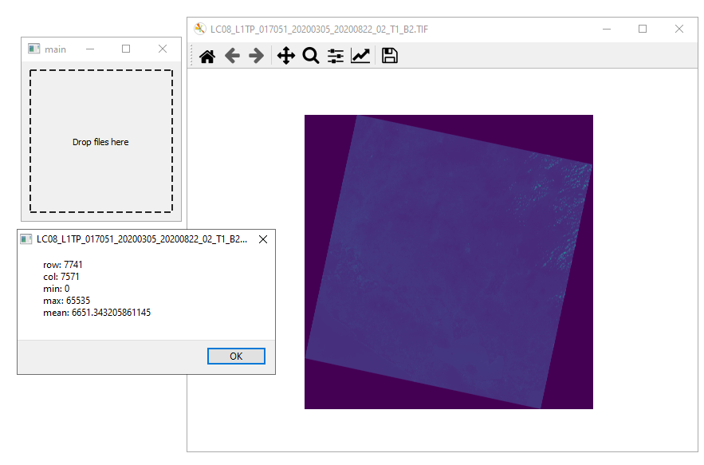
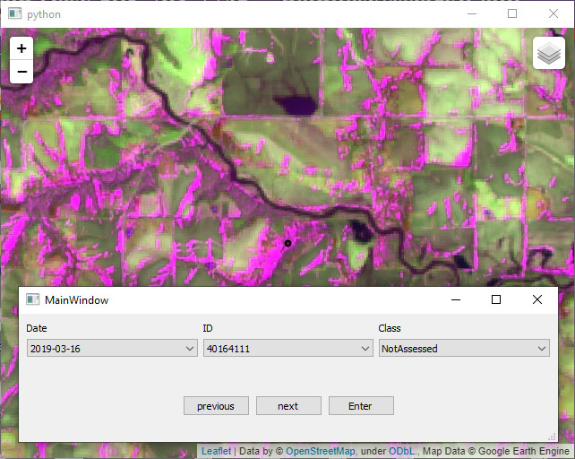
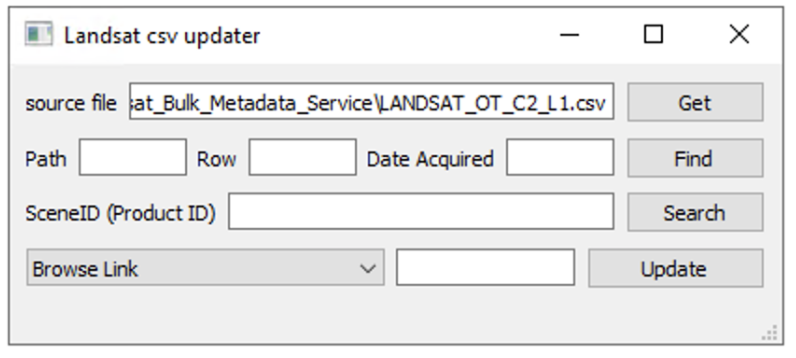

Useful Executable Programs Developed in Python
Zhen Liu
As a geographical scientist, I usually process and analyze data by operating professional software. However, I can't work efficiently by just clicking buttons and typing sometimes. For example, the software doesn't have the specific function; there are many repetitive works in the working pipeline. This blog shows programs developed in Python for daily works. Not all projects are open-source because of companies' policy. But, I hope those projects can give you some inspirations.
1. Quickly Raster Viewer
Problem: Sometimes, I only want to know the general look of a raster file and some basic properties, like size, value ranges, etc. However, I don't want to open a big software, like ArcGIS Map, becuase it takes time to launch it.
Features:
- The program is light and simple. Users only need to drag the file to the program.
- It shows the minimum, maximum and mean values, row number and column number of the file.
Technologies: PyQt5, Gdal, Matplotlib, Numpy, PyInstaller
Codes: https://github.com/zhenliu26/RasterCheck
2. Sample tool with Google Earth Engine
Problem: When I was doing a project about flood points sampling, we saved data in the Google Earth Engine. However, there is not a great tool on GEE for inspect sampling points. I developed this program to obtain the data from GEE and save the label for each sample point.
Features:
- Users inspect the target on Google Earth Engine and save the records locally;
- Records are easy to operate;
- People can work on the same scene together when they share the record files;
- Several composites are available.
Technologies: PyQt5, pandas, folium, Google Earth Engine APIs, PyInstaller
Codes: https://github.com/zhenliu26/sampleGEE
3. bulk data finder and updater
Problem: USGS provides Landsat-related metadata files in the link. Users download them to check the properties of each image. Users can download csv file from the website for the whole dataset. However, the size of file is too huge to search a image or even open the file. This program helps people easily find a image or alter the properties without any programming background.
Features:
- Users can search product identifier by path, row, and date acquired;
- It is easy to update the properties to the original file.
Technologies: PyQt5, pandas, PyInstaller
